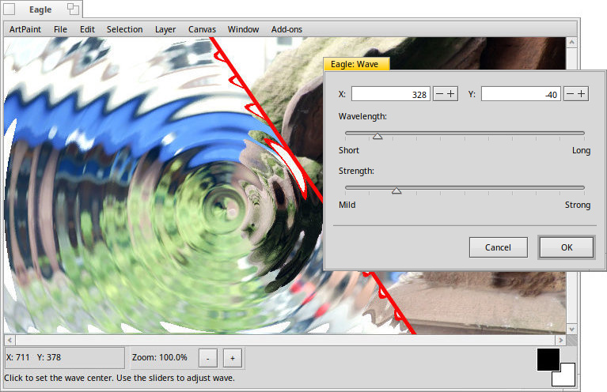

The Wave add-on

A click into the canvas sets the center of the wave. If it needs to be exact, you can enter its coordinates. Use the sliders to change and .
Back: The Twirl add-on Next: The Wood add-on
A click into the canvas sets the center of the wave. If it needs to be exact, you can enter its coordinates. Use the sliders to change and .